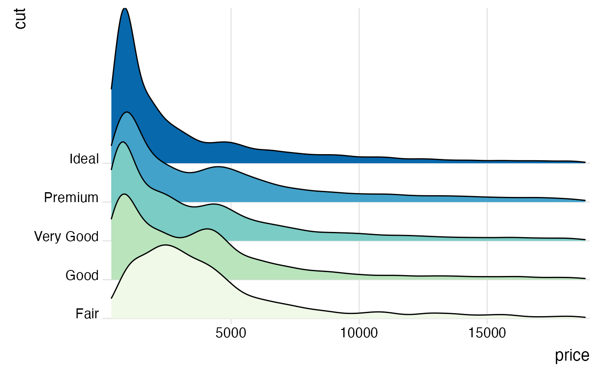
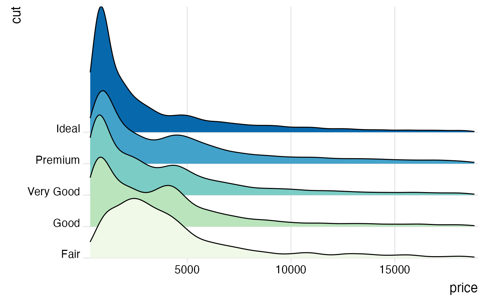

geom_density_ridges arranges multiple density plots in a staggered fashion, as in the cover of the famous Joy Division album Unknown Pleasures.
Usage
geom_density_ridges(
mapping = NULL,
data = NULL,
stat = "density_ridges",
position = "points_sina",
panel_scaling = TRUE,
na.rm = FALSE,
show.legend = NA,
inherit.aes = TRUE,
...
)
geom_density_ridges2(
mapping = NULL,
data = NULL,
stat = "density_ridges",
position = "points_sina",
panel_scaling = TRUE,
na.rm = FALSE,
show.legend = NA,
inherit.aes = TRUE,
...
)Arguments
- mapping
Set of aesthetic mappings created by
ggplot2::aes(). If specified andinherit.aes = TRUE(the default), it is combined with the default mapping at the top level of the plot. You must supplymappingif there is no plot mapping.- data
The data to be displayed in this layer. There are three options:
If
NULL, the default, the data is inherited from the plot data as specified in the call toggplot().A
data.frame, or other object, will override the plot data.A
functionwill be called with a single argument, the plot data. The return value must be adata.frame., and will be used as the layer data.- stat
The statistical transformation to use on the data for this layer, as a string.
- position
Position adjustment, either as a string, or the result of a call to a position adjustment function.
- panel_scaling
If
TRUE, the default, relative scaling is calculated separately for each panel. IfFALSE, relative scaling is calculated globally.- na.rm
If
FALSE, the default, missing values are removed with a warning. IfTRUE, missing values are silently removed.- show.legend
logical. Should this layer be included in the legends?
NA, the default, includes if any aesthetics are mapped.FALSEnever includes, andTRUEalways includes.- inherit.aes
If
FALSE, overrides the default aesthetics, rather than combining with them.- ...
other arguments passed on to
ggplot2::layer(). These are often aesthetics, used to set an aesthetic to a fixed value, likecolor = "red"orlinewidth = 3. They may also be parameters to the paired geom/stat.
Details
By default, this geom calculates densities from the point data mapped onto the x axis. If density calculation is
not wanted, use stat="identity" or use geom_ridgeline. The difference between geom_density_ridges and geom_ridgeline
is that geom_density_ridges will provide automatic scaling of the ridgelines (controlled by the scale aesthetic), whereas
geom_ridgeline will plot the data as is. Note that when you set stat="identity", the height aesthetic must
be provided.
Note that the default stat_density_ridges makes joint density estimation across all datasets. This may not generate
the desired result when using faceted plots. As an alternative, you can set stat = "density" to use
ggplot2::stat_density.
In this case, it is required to add the aesthetic mapping height = after_stat(density) (see examples).
Aesthetics
Required aesthetics are in bold.
xyweightOptional case weights passed tostats::densityto calculate a weighted density estimategroupDefines the grouping. Not needed if a categorical variable is mapped ontoy, but needed otherwise. Will typically be the same variable as is mapped toy.heightThe height of each ridgeline at the respective x value. Automatically calculated and provided bystat_density_ridgesif the default stat is not changed.scaleA scaling factor to scale the height of the ridgelines relative to the spacing between them. A value of 1 indicates that the maximum point of any ridgeline touches the baseline right above, assuming even spacing between baselines.rel_min_heightLines with heights below this cutoff will be removed. The cutoff is measured relative to the overall maximum, sorel_min_height=0.01would remove everything that is 1\ ridgelines. Default is 0, so nothing is removed. alphacolour,fill,group,alpha,linetype,linewidth, as ingeom_ridgeline.point_shape,point_colour,point_size,point_fill,point_alpha,point_stroke, as ingeom_ridgeline.
Examples
library(ggplot2)
# set the `rel_min_height` argument to remove tails
ggplot(iris, aes(x = Sepal.Length, y = Species)) +
geom_density_ridges(rel_min_height = 0.005) +
scale_y_discrete(expand = c(0.01, 0)) +
scale_x_continuous(expand = c(0.01, 0)) +
theme_ridges()
#> Picking joint bandwidth of 0.181
 # set the `scale` to determine how much overlap there is among the plots
ggplot(diamonds, aes(x = price, y = cut)) +
geom_density_ridges(scale = 4) +
scale_y_discrete(expand = c(0.01, 0)) +
scale_x_continuous(expand = c(0.01, 0)) +
theme_ridges()
#> Picking joint bandwidth of 458
# set the `scale` to determine how much overlap there is among the plots
ggplot(diamonds, aes(x = price, y = cut)) +
geom_density_ridges(scale = 4) +
scale_y_discrete(expand = c(0.01, 0)) +
scale_x_continuous(expand = c(0.01, 0)) +
theme_ridges()
#> Picking joint bandwidth of 458
 # the same figure with colors, and using the ggplot2 density stat
ggplot(diamonds, aes(x = price, y = cut, fill = cut, height = after_stat(density))) +
geom_density_ridges(scale = 4, stat = "density") +
scale_y_discrete(expand = c(0.01, 0)) +
scale_x_continuous(expand = c(0.01, 0)) +
scale_fill_brewer(palette = 4) +
theme_ridges() + theme(legend.position = "none")

# use geom_density_ridges2() instead of geom_density_ridges() for solid polygons
ggplot(iris, aes(x = Sepal.Length, y = Species)) +
geom_density_ridges2() +
scale_y_discrete(expand = c(0.01, 0)) +
scale_x_continuous(expand = c(0.01, 0)) +
theme_ridges()
#> Picking joint bandwidth of 0.181
# the same figure with colors, and using the ggplot2 density stat
ggplot(diamonds, aes(x = price, y = cut, fill = cut, height = after_stat(density))) +
geom_density_ridges(scale = 4, stat = "density") +
scale_y_discrete(expand = c(0.01, 0)) +
scale_x_continuous(expand = c(0.01, 0)) +
scale_fill_brewer(palette = 4) +
theme_ridges() + theme(legend.position = "none")

# use geom_density_ridges2() instead of geom_density_ridges() for solid polygons
ggplot(iris, aes(x = Sepal.Length, y = Species)) +
geom_density_ridges2() +
scale_y_discrete(expand = c(0.01, 0)) +
scale_x_continuous(expand = c(0.01, 0)) +
theme_ridges()
#> Picking joint bandwidth of 0.181